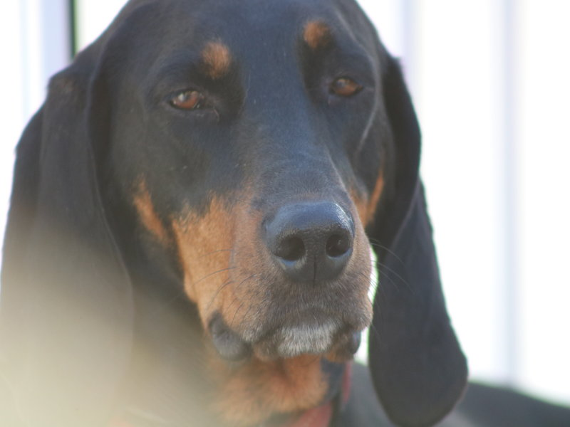

Penelope
Penelop was are first foster rescue dog.
My wife and I fostered her in 2011 for American Black and Tan coonhound rescue. After a week we said lets adopt her.
Penelope and her sister and brother were abanded as puppies so we are not sure how old she was when we got her.
When we took her to our vet to be checked out the vet thought she was about 6 months.